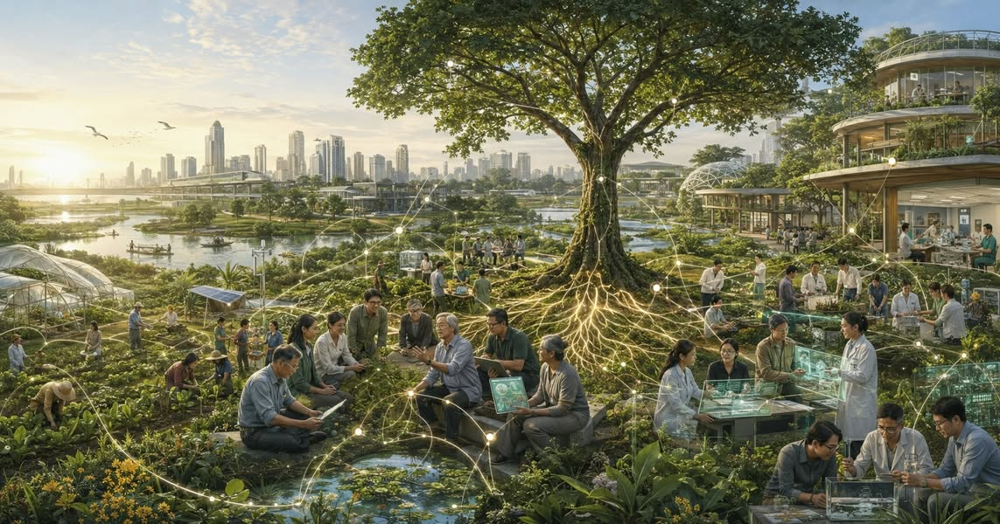

The Life Systems University: เหตุผลที่ มก. ยังควรดำรงอยู่ในปี 2589
{kind=link}

ก่อนเข้าร่วมโครงการ Kasetsart University Strategic Foresight 2028–2047 ผมลองนำประสบการณ์จากการเป็นอาจารย์ ผู้บริหาร และกรรมการสภามหาวิทยาลัย มาตรวจสอบกับรายงานอนาคตด้านเศรษฐกิจ เทคโนโลยี การศึกษา เกษตร อาหาร และความเสี่ยงของโลก
ไม่มีใครทำนายมหาวิทยาลัยในอีก 20 ปีได้อย่างแม่นยำ แต่เมื่อเป็นงานมองอนาคต เราควรฝันให้ไกลกว่าการปรับหลักสูตร ตั้งหน่วยงานใหม่ หรือสร้างอาคารเพิ่ม
เมื่อความรู้เข้าถึงได้ทุกที่ มหาวิทยาลัยต้องเปลี่ยนสิ่งที่ตนสร้าง
ในอีก 20 ปี ความรู้พื้นฐานจำนวนมหาศาลจะเข้าถึงได้ผ่าน AI และระบบการเรียนรู้ดิจิทัล ผู้คนอาจไม่เข้ามหาวิทยาลัยในวัยเดียวกัน ไม่เดินตามลำดับวิชาเดียวกัน และไม่อยู่ในสถานะ “นิสิต” ต่อเนื่องหลายปี เส้นแบ่งระหว่างการเรียน การทำงาน การวิจัย และการแก้ปัญหาจริงจะค่อย ๆ จางลง
รายวิชา หลักสูตร ผู้เรียน และอาจารย์อาจไม่ได้หายไป แต่จะเปลี่ยนความหมาย รายวิชาจะไม่ใช่หน่วยเดียวของการเรียนรู้ หลักสูตรจะไม่ใช่เส้นทางเดียวของการพัฒนาคน ผู้เรียนจะมีหลายวัยและหลายอาชีพ ส่วนอาจารย์จะขยับจากผู้ถ่ายทอดเนื้อหา ไปเป็นผู้ตั้งโจทย์ ออกแบบประสบการณ์ สร้างความรู้ ตรวจสอบหลักฐาน และรับรองมาตรฐาน
คุณค่าจะย้ายไปอยู่ในสิ่งที่แต่ละคนสร้างเองได้ยาก
เมื่อความรู้หาได้ง่ายขึ้น คุณค่าของมหาวิทยาลัยไม่ได้หายไป แต่จะย้ายไปอยู่ในชุมชนของผู้รู้ ข้อมูลระยะยาว เครื่องมือและพื้นที่ทดลอง โจทย์จากโลกจริง การทำงานข้ามศาสตร์ การใช้วิจารณญาณ และระบบรับรองที่สังคมเชื่อถือ
มหาวิทยาลัยจึงควรเป็นพื้นที่ที่คนซึ่งสนใจปัญหาเดียวกันมาพบกัน แม้อายุ พื้นฐาน อาชีพ และสถานะต่างกัน พวกเขาเข้ามาไม่ใช่เพียงเพื่อรับความรู้ แต่เพื่อใช้ความรู้ ข้อมูล เทคโนโลยี และประสบการณ์ร่วมกัน สร้างคำตอบที่คนหรือองค์กรใดองค์กรหนึ่งทำไม่ได้โดยลำพัง
โลกที่เปลี่ยนพร้อมกันหลายด้านต้องการโครงสร้างพื้นฐานทางความรู้
อนาคตจะไม่ได้ราบรื่น โลกต้องเผชิญพร้อมกันทั้งสังคมสูงวัย ความก้าวหน้าของ AI และเทคโนโลยีชีวภาพ ความผันผวนทางเศรษฐกิจ ความแตกแยกทางภูมิรัฐศาสตร์ วิกฤตภูมิอากาศ ความเสื่อมโทรมของทรัพยากร ความไม่มั่นคงทางอาหาร และความเหลื่อมล้ำในการเข้าถึงโอกาส
มหาวิทยาลัยไม่จำเป็นต้องวิ่งตามทุกกระแส แต่ต้องทำได้มากกว่าการจัดการศึกษา โดยเป็นโครงสร้างพื้นฐานทางความรู้และความร่วมมือที่ช่วยให้สังคมเข้าใจความเสี่ยง ทดลองทางเลือก ตัดสินใจจากหลักฐาน และปรับตัวต่อความเปลี่ยนแปลง
พื้นที่รับผิดชอบของ มก. คือ “ระบบชีวิต”
สำหรับมหาวิทยาลัยเกษตรศาสตร์ พื้นที่ซึ่งควรรับผิดชอบอย่างชัดเจนคือระบบชีวิต อันประกอบด้วยอาหาร เกษตร สุขภาพ สิ่งแวดล้อม น้ำ พลังงาน เมือง ชุมชน ทรัพยากรชีวภาพ และคุณภาพชีวิต เรื่องเหล่านี้เชื่อมโยงกันและไม่สามารถแก้ภายในขอบเขตของคณะหรือศาสตร์ใดศาสตร์หนึ่ง
มก. ในปี 2589 จึงควรเป็น The Life Systems University ไม่ใช่ด้วยการเปลี่ยนชื่อหรือเพิ่มหน่วยงาน แต่ด้วยการนำความสามารถที่กระจายอยู่ทั่วมหาวิทยาลัยมาจัดระบบใหม่รอบปัญหาสำคัญของประเทศ
เปลี่ยนทรัพยากรที่กระจายอยู่ให้เป็นระบบทดลองจริง
วิทยาเขต สถานีวิจัย ฟาร์ม โรงพยาบาล ห้องปฏิบัติการ ชุมชน และเครือข่ายความร่วมมือควรถูกเชื่อมเป็นพื้นที่ทดลองจริง ข้อมูลจากการศึกษา วิจัย บริการวิชาการ และการบริหารควรใช้ร่วมกันอย่างมีธรรมาภิบาล
คณะและภาควิชายังคงเป็นฐานของความเชี่ยวชาญ แต่ต้องรวมตัวข้ามโครงสร้างเดิมเพื่อทำงานตามภารกิจได้ โครงสร้างถาวรควรรักษาความลึกของศาสตร์ ขณะที่โครงสร้างภารกิจช่วยประกอบความรู้นั้นเข้ากับปัญหาที่ไม่เคารพเส้นแบ่งขององค์กร
AI ต้องเป็นโครงสร้างพื้นฐาน แต่ไม่ใช่ผู้กำหนดทิศทาง
ในมหาวิทยาลัยเช่นนี้ AI ไม่ควรเป็นโครงการพิเศษ แต่เป็นโครงสร้างพื้นฐานเช่นเดียวกับข้อมูล ห้องปฏิบัติการ และเครือข่ายการวิจัย ทุกสาขาควรใช้ AI เพื่อขยายความสามารถของตน โดยยังรักษาความลึกทางวิชาการและความรับผิดชอบต่อผลลัพธ์
ขณะเดียวกัน มหาวิทยาลัยต้องมีความสามารถประเมินผลกระทบ กำกับการใช้ และรักษาความเป็นธรรม ความปลอดภัย และความรับผิดชอบต่อสังคม เทคโนโลยีควรช่วยให้มหาวิทยาลัยไปถึงเป้าหมาย ไม่ใช่กลายเป็นผู้กำหนดเป้าหมายเสียเอง
การศึกษาต้องรับรองความสามารถ ไม่ใช่เพียงการเรียนครบ
การศึกษาในอนาคตไม่ควรวัดเพียงว่าเรียนครบตามหลักสูตรหรือไม่ แต่ต้องรับรองว่าผู้เรียนทำอะไรได้ สร้างคุณค่าอะไร จัดการความขัดแย้งอย่างไร และรับผิดชอบต่อผลของการตัดสินใจได้เพียงใด
การเรียนรู้ตลอดชีวิตจึงไม่ควรเป็นธุรกิจเสริมของหน่วยงานใด แต่เป็นภารกิจหลักของทั้งมหาวิทยาลัย และต้องเปิดโอกาสให้คนซึ่งมีต้นทุนทางเศรษฐกิจ สังคม และดิจิทัลแตกต่างกันเข้าถึงได้จริง
งานวิจัยต้องกลายเป็นระบบความรู้ระยะยาว
งานวิจัยควรเปลี่ยนจากโครงการแยกส่วน ไปสู่ระบบความรู้ระยะยาวที่เชื่อมข้อมูล พื้นที่ทดลอง นักวิจัย ผู้ใช้ และการนำไปใช้จริง มหาวิทยาลัยไม่ควรเป็นเพียงผู้รับจ้างวิจัยหรือจัดอบรม แต่ควรเป็นพื้นที่กลางที่รัฐ เอกชน ชุมชน และประชาชนไว้วางใจให้ทำงานร่วมกันในเรื่องซับซ้อนและมีความเสี่ยง
บทบาทนี้สำคัญเพราะปัญหาหลายเรื่องไม่มีฝ่ายใดควรมีสิทธิ์กำหนดคำตอบเพียงลำพัง มหาวิทยาลัยจึงต้องสร้างทั้งหลักฐาน กระบวนการ และพื้นที่ปลอดภัยพอให้ความรู้และผลประโยชน์ที่แตกต่างกันมาพบกันได้
ธรรมาภิบาลคือความสามารถในการปรับตัว
ภาพนี้จะเกิดขึ้นไม่ได้ หากมหาวิทยาลัยยังบริหารด้วยข้อมูลคนละชุด มีหน่วยงานซ้ำซ้อน จัดสรรทรัพยากรโดยไม่เชื่อมกับผลลัพธ์ และตัดสินใจด้วยกระบวนการที่ตรวจสอบไม่ได้
ธรรมาภิบาลจึงไม่ใช่เพียงข้อกำหนดด้านจริยธรรม แต่เป็นเงื่อนไขของความสามารถในการปรับตัว มหาวิทยาลัยที่สร้างความไว้วางใจภายในองค์กรไม่ได้ ย่อมยากที่จะเป็นสถาบันที่สังคมไว้วางใจให้ช่วยจัดการปัญหาสำคัญ
มหาวิทยาลัยอาจเบาลง แต่ต้องเชื่อมโยงและรับผิดชอบมากขึ้น
มหาวิทยาลัยเกษตรศาสตร์ในอีก 20 ปีอาจไม่ได้มีนิสิต หลักสูตร อาคาร หรือหน่วยงานมากกว่าเดิม แต่อาจมีขอบเขตองค์กรเบาลง เชื่อมกับคนภายนอกมากขึ้น ใช้ทรัพยากรร่วมกันมากขึ้น และเลือกทำเฉพาะสิ่งที่มีคุณค่าพอจะทำ
สิ่งที่ควรเหลืออยู่ไม่ใช่รูปแบบของมหาวิทยาลัยปัจจุบัน แต่คือความสามารถในการนำผู้คน ความรู้ ข้อมูล เทคโนโลยี และความไว้วางใจมารวมกัน เพื่อดูแลระบบชีวิตและแก้ปัญหาที่แต่ละคนไม่สามารถแก้ได้โดยลำพัง
นี่คือเหตุผลที่มหาวิทยาลัยเกษตรศาสตร์ยังควรดำรงอยู่ในปี 2589
อ่านหลักฐานประกอบ คู่มืออ่านชุดเอกสาร KU Foresight 2028–2047 รายงานและข้อมูลตั้งต้นด้านโลก เทคโนโลยี การศึกษา เกษตร อาหาร กฎหมาย แผน และสถานะของมหาวิทยาลัย